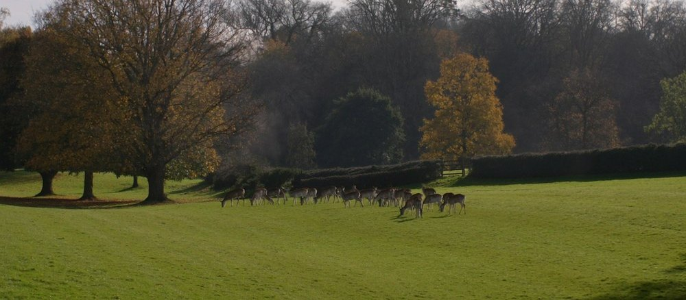

עודכן לאחרונה ב-3 באוקטובר 2026. שעות הפתיחה, המחירים, הסגירות העונתיות ומרחקי ההליכה נבדקו מול האתרים הרשמיים של קיו, הפארקים המלכותיים, הנשיונל טראסט ו-TfL ומול מפה באותו יום
ריצ׳מונד וקיו הם הפינה של לונדון שבה העיר נגמרת ומתחילה אנגליה: התמזה מתפתלת בין אחו לגנים, הפאבים יושבים על המים, ועל הגבעה עומדים אנשים ומסתכלים על נוף שטרנר צייר. זה לא יום של מוזיאונים ולא של קניות, זה יום של הליכה בירוק, והוא מצוין בדיוק בגלל זה. הבעיה היחידה שלו היא עודף: גני קיו, ריצ׳מונד פארק ובית האם הם כל אחד יום בפני עצמו, ומי שמנסה לחבר אותם מסיים עם שלושה חצאים. המדריך הזה בנוי כדי שתבחרו נכון.
בחרו כיוון ותראו כאן את המקומות עצמם, עם מה שכדאי לדעת לפני שהולכים.
מה זה ריצ׳מונד וקיו, ולמה זה לא קנזינגטון ולא גריניץ׳
קיו וריצ׳מונד הם שני מקומות על אותה גדה של התמזה, בדרום מערב העיר, ובערך ארבעים דקות מהמרכז. קיו הוא כפר קטן עם כיכר דשא, כנסייה שבה קבור הצייר גיינסבורו, ומאחורי החומה גנים בוטניים שהתחילו כגן מלכותי ב-1759 והיום הם אתר מורשת עולמית של אונסקו, עם חממות ויקטוריאניות שהן יצירות הנדסה בפני עצמן. ריצ׳מונד, שתי תחנות הלאה, היא עיירה: כיכר דשא עם משחקי קריקט, שרידי ארמון טיודור, גדת נהר עם פאבים, ומעליהם גבעה שהנוף ממנה היה כל כך מפורסם שהפרלמנט הבריטי העביר ב-1902 חוק מיוחד כדי להגן עליו מבנייה. ומעבר לשער בראש הגבעה, ריצ׳מונד פארק: שטח של כאלף הקטרים לפי הפארקים המלכותיים, שמורת טבע לאומית, ובה יותר משש מאות איילים אדומים ומנומרים שמסתובבים בלי גדר.
וזה מה שמבדיל את האזור משני המתחרים שלו על אותו יום בטיול. קנזינגטון היא מוזיאונים, חנויות וארמון בתוך העיר, יום של גגות. גריניץ׳ היא מורשת ימית, מצפה הכוכבים וקו האורך, יום של היסטוריה. ריצ׳מונד וקיו הם טבע: גנים, נהר, פארק ונוף, יום שכולו בחוץ ובהליכה. אם כבר ראיתם את המרכז, או אם זה ביקור שני, זה היום שמראה לכם למה אנגלים אוהבים את האנגליה שלהם, והוא לא דומה לשום יום אחר בלונדון.
למי האזור הזה מתאים, ולמי פחות
בוקר בין חממות, צהריים בפאב על המים, ושקיעה מהגבעה שטרנר צייר. בלי תורים, בלי רעש, ובסתיו עם צבעים.
גן ילדים גדול בתוך קיו, מעבר צמרות בגובה שמונה עשרה מטרים, ברווזים על הנהר, ואיילים אמיתיים ממרחק בטוח בפארק. יום בלי ״אל תיגעו״ של מוזיאון.
הזכוכית והברזל של הפאלם האוס, השדרות, הנהר מריצ׳מונד היל באור אחר הצהריים, ואיילים בערפל של בוקר חורף. האור כאן אחר מאשר במרכז.
מי שכבר ראה את ביג בן ואת המצודה ורוצה יום אחד של ירוק אמיתי, לא פארק עירוני אלא גנים, נהר ופארק של אלף הקטרים.
ולמי זה פחות מתאים. מי שנמצא בלונדון יומיים או שלושה בפעם הראשונה צריך אותם למרכז, וריצ׳מונד וקיו הם היום השביעי, לא השלישי. ביום של גשם כבד היום מאבד את רובו: החממות נותנות שעתיים תחת גג, וכל השאר בחוץ. ומי שלא אוהב ללכת הרבה יתעייף, כי גני קיו לבדם הם ארבעה עד שישה קילומטרים של הליכה בתוכם, ואחריהם עוד הליכה בריצ׳מונד ועלייה לגבעה. עם עגלה דווקא נוח: קיו שטוח, עם שבילי אספלט וחניוני עגלות, והחלק של הנהר בריצ׳מונד שטוח גם הוא. הקושי הוא רק העלייה לריצ׳מונד היל ושבילי העפר של הפארק.
📅 מה פתוח מתי, לפני שבונים את היום
הטבלה נכונה ל-3 באוקטובר 2026 לפי האתרים הרשמיים, ובודקים שוב בשבוע הביקור, כי קיו משנים שעות לפי העונה ובאוקטובר השינוי מגיע באמצע החודש.
| מקום | מתי | מה חשוב | עלות |
|---|---|---|---|
| גני קיו, הגנים | עד 24 באוקטובר 2026: 10:00 עד 18:00, כניסה אחרונה 17:00. מ-25 באוקטובר עד 11 בנובמבר: 10:00 עד 16:00, כניסה אחרונה 15:00. מ-12 בנובמבר 2026 עד 3 בינואר 2027: 10:00 עד 15:15, כניסה אחרונה 14:30 | החממות 10:00 עד 17:00 גם בקיץ, מעבר הצמרות עד 17:00. בחורף הגנים נסגרים לפני החממות | בתשלום |
| ארמון קיו, הפגודה הגדולה והקוטג׳ של המלכה שרלוט | סגורים מ-28 בספטמבר 2026 עד אביב 2027. את הפגודה רואים מבחוץ | כלול בכרטיס | |
| בית הנופר בקיו | סגור לשיפוץ עד אביב 2027. גם שביל העץ באזור הטבעי ובית הקרח סגורים | כלול בכרטיס | |
| שער האריה בקיו, היציאה לכיוון ריצ׳מונד | עד 1 בנובמבר כל יום. מ-2 בנובמבר 2026 עד 29 בינואר 2027 בסופי שבוע בלבד | בימי חול בחורף סגור. יוצאים משער ויקטוריה ונוסעים באוטובוס 65 | כלול |
| שוק הכפר בקיו | ביום ראשון הראשון בכל חודש, חוץ מינואר, 10:00 עד 14:00 | מול תחנת Kew Gardens, כארבעים וחמישה דוכנים. הבא: 4 באוקטובר 2026, ואז 1 בנובמבר ו-6 בדצמבר | חינם |
| ריצ׳מונד גרין, גדת הנהר, גני הטראסה וריצ׳מונד היל | תמיד, הגנים בשעות האור | שטח פתוח, בחינם, בלי כרטיסים | חינם |
| ריצ׳מונד פארק, שערי הולכי הרגל | כל היום וכל הלילה | בנובמבר עד תחילת דצמבר ובפברואר עד תחילת מרץ השערים סגורים מ-20:00 עד 7:30, חוץ מלילות שישי ושבת. שערי הרכב 7:00 עד 18:45 | חינם |
| מטע איזבלה בריצ׳מונד פארק | כל השנה, בשעות הפארק, עם כמה סגירות מוקדמות באפריל ובמאי | שיא הפריחה בסוף אפריל ובתחילת מאי. בסתיו צבעים, בחורף שקט | חינם |
| פמברוק לודג׳, בית התה בפארק | מ-9:00 עד רבע שעה לפני רדת החשכה | שירותים, תה, והתצפית לסנט פול מהתל שלידו | הכניסה חינם |
| בית האם, הנשיונל טראסט | באוקטובר: הבית כל יום 11:30 עד 15:30, הגן 10:00 עד 17:00. מנובמבר: הבית בימי חול בסיור מודרך בלבד, בסופי שבוע 11:30 עד 15:30, הגן עד 16:00 | כניסה אחרונה חצי שעה לפני הסגירה. בלי הזמנה מראש, ניגשים לקבלה בשער הפונה לנהר | בתשלום |
המסקנה: עד 24 באוקטובר יש מספיק אור כדי לעשות את קיו ואחריו את ריצ׳מונד היל באותו יום. מ-25 באוקטובר קיו נסגרים ב-16:00 והשקיעה מגיעה לפני חמש, ואז מתחילים בעשר בדיוק, יוצאים מקיו עד שתיים וחצי, וממהרים לגבעה. ומ-2 בנובמבר, בימי חול, שער האריה סגור והיציאה לריצ׳מונד היא משער ויקטוריה באוטובוס.
🌿 גני קיו, היעד שלוקח את רוב היום
גני קיו הם מאה שלושים ושניים הקטרים של גן בוטני על גדת התמזה, שהתחילו כגן של הנסיכה אוגוסטה ב-1759, הפכו למעבדה הבוטנית של האימפריה הבריטית, ומאז 2003 הם אתר מורשת עולמית של אונסקו. מה שרואים כמבקרים הוא קודם כל החממות: הפאלם האוס, חממת הזכוכית והברזל המעוגלת מ-1848 שמכילה יער גשם עם מדרגות לולייניות למעבר העליון; הבית הממוזג, חממה ויקטוריאנית עצומה שנפתחה מחדש ב-2018 אחרי חמש שנות שיפוץ; וחממת הנסיכה מוויילס, עם עשרה אזורי אקלים, קקטוסים ושושני מים, תחת גג אחד. בין החממות, מעבר צמרות העצים: שביל פלדה באורך מאתיים מטרים בגובה שמונה עשרה מטרים, עם מדרגות ועם מעלית, ושדרת הגבול הרחב, שלוש מאות ועשרים מטרים של ערוגות. ובקצה הדרומי, הפגודה הגדולה מ-1762 שרואים מרחוק, והאזור הטבעי, יער של חמישה עשר הקטרים שבו מפסיקים להרגיש בלונדון.
וכאן ההודאה שחייבים לקבל לפני הכל: קיו הם ארבע עד חמש שעות, לא שעתיים. המרחק משער אליזבת בצפון לשער האריה בדרום הוא כשני קילומטרים וחצי בקו ישר, וסיבוב סביר בין החממות, המעבר והיער הוא ארבעה עד שישה קילומטרים. מי שמגיע ב-12:00 ורוצה גם את ריצ׳מונד אחר הצהריים יראה חממה אחת ויתעצבן. היום מתחיל בעשר, עם פתיחת השערים, ובסתיו, כשהכניסה האחרונה זזה לשלוש ואחר כך לשתיים וחצי, הוא מתחיל בעשר בדיוק. יש גם רכבת מסיירת בתשלום בתוך הגנים למי שרוצה לחסוך בהליכה, וכיסאות גלגלים להשאלה בכל השערים בלי הזמנה.
נכון ל-3 באוקטובר 2026 אלה הסגירות שצריך לדעת עליהן, וכולן מתוארכות: בית הנופר, החממה הקטנה ליד הפאלם האוס, סגור לשיפוץ עד אביב 2027. ארמון קיו, הארמון הקטן של ג׳ורג׳ השלישי עם המטבחים המלכותיים, הפגודה הגדולה והקוטג׳ של המלכה שרלוט סגורים מ-28 בספטמבר 2026 עד אביב 2027, כמו בכל חורף, אז את הפגודה רואים מבחוץ והארמון נשאר לביקור הבא. ושער האריה, היציאה הדרומית לכיוון ריצ׳מונד, פתוח מ-2 בנובמבר 2026 עד 29 בינואר 2027 בסופי שבוע בלבד. כל השאר, שלוש החממות הגדולות, מעבר הצמרות, הגלריות וגן הילדים, פתוח.
כרטיסים ומחירים, נכון ל-3 באוקטובר 2026
| כרטיס | עונת השיא, עד 31 באוקטובר | מחוץ לעונה, 1 בנובמבר עד 31 בינואר |
|---|---|---|
| מבוגר | 25 ליש״ט באינטרנט, 28 בשער | 17 ליש״ט באינטרנט, 20 בשער |
| ילד, גיל 4 עד 15 | 2 ליש״ט באינטרנט, 4 בשער | 2 ליש״ט באינטרנט, 4 בשער |
| מתחת לגיל 4 | חינם | חינם |
| צעירים 16 עד 29 וסטודנטים | 10 ליש״ט באינטרנט, 12 בשער | 7 ליש״ט באינטרנט, 10 בשער |
| גיל 65 ומעלה ואנשים עם מוגבלות | 23 ליש״ט באינטרנט, 26 בשער | 15 ליש״ט באינטרנט, 18 בשער |
| ימי שלישי, 8 בספטמבר עד 29 בדצמבר 2026 | מבוגר 10 ליש״ט, בימי שלישי בלבד | |
כל סוגי הכרטיסים נמכרים גם בשער, אבל ההפרש של שלוש ליש״ט לכל מבוגר שווה דקה באתר הרשמי, ובימי שלישי בסתיו הכרטיס עולה פחות מחצי. המחירים שלמעלה הם בלי התרומה הוולונטרית שקיו מציעים בקופה. מלווה חיוני של אדם עם מוגבלות נכנס חינם. ומדריך הפארקים מסביר למה קיו הוא הפארק היחיד בלונדון שמשלמים עליו ולמה זה שווה.
🚉 תחנת Kew Gardens, הכפר וקיו גרין: ההתחלה
היום מתחיל בתחנת Kew Gardens, אזור 3, שאליה מגיעים בקו דיסטריקט, בענף של ריצ׳מונד, או בקו מילדמיי של האוברגראונד. היציאה מהתחנה היא ישר לכפר קיו: רחוב קצר של בתי קפה, מאפייה וחנויות קטנות סביב התחנה, שבו שותים את הקפה של הבוקר לפני שנכנסים לגנים, כי בפנים הקפה יקר יותר והתור ארוך יותר. ביום ראשון הראשון של כל חודש, חוץ מינואר, הרחוב נסגר לתנועה ומתמלא בשוק הכפר: כארבעים וחמישה דוכנים של אוכל, מאפים ויד שנייה, עם מוזיקה חיה, מעשר עד שתיים. השוק הבא הוא 4 באוקטובר 2026, ואחריו 1 בנובמבר ו-6 בדצמבר, ובשאר הימים זה סתם רחוב נעים. לא מתכננים את היום סביבו, אבל אם זה יוצא ביום ראשון הזה, מתחילים חצי שעה מוקדם יותר.
מהתחנה יש שתי דרכים לגנים. הקצרה: חמש דקות הליכה ישר לשער ויקטוריה, הכניסה הקרובה לתחנה, וממנו הפאלם האוס במרחק כמה מאות מטרים. הארוכה והיפה: רבע שעה הליכה דרך רחובות הכפר לקיו גרין, כיכר הדשא הכפרית שבצד אחד שלה כנסיית סנט אן מ-1714, שבחצרה קבורים הציירים גיינסבורו וזופני, ובצד השני שער אליזבת, הכניסה הראשית לגנים, עם האורנז׳רי ממש אחרי השער. מי שמגיע ברכבת מ-Waterloo לתחנת Kew Bridge, או בסירה מווסטמינסטר לרציף קיו בעונה, ממילא מתחיל מקיו גרין, כי שער אליזבת במרחק שמונה מאות מטרים מהתחנה ומאתיים מטרים מהרציף. בבוקר של יום חול הכיכר ריקה ושקטה, ובסוף שבוע של קיץ משחקים עליה קריקט.
🏞️ אולד דיר פארק, ריצ׳מונד גרין והנהר
יוצאים מקיו משער האריה, בפינה הדרומית מזרחית של הגנים, ועכשיו הולכים לריצ׳מונד: קילומטר וחצי לאורך Kew Road, עם אולד דיר פארק מימין, המרחב הפתוח של ארמון ריצ׳מונד שנעלם, שבו עומד בודד מצפה הכוכבים שג׳ורג׳ השלישי בנה ב-1769 כדי לצפות במעבר נוגה. מי שרוצה הולך דרך הפארק עצמו במקום לאורך הכביש, בשביל שעובר ליד מגרשי הספורט, ואז זה כשני קילומטרים. בחורף, בימי חול, שער האריה סגור, ואז יוצאים משער ויקטוריה ונוסעים באוטובוס 65 לכיוון Richmond, עשר דקות, או הולכים שני קילומטרים וחצי. בסוף הדרך, ריצ׳מונד גרין: כיכר דשא גדולה עם בתים גאורגיאניים מסביב, פאבים בפינות, ובפינה הדרומית מערבית שלה שער הלבנים של ארמון ריצ׳מונד, הארמון שבו מתה אליזבת הראשונה ב-1603 ושממנו נשאר כמעט רק השער הזה. חצי שעה כאן, כולל הסמטאות מאחורי הכיכר, שבהן נמצאות החנויות הקטנות של ריצ׳מונד.
מהכיכר יורדים חמש דקות לנהר. גדת הנהר של ריצ׳מונד היא טיילת של כחצי קילומטר בין גשר ריצ׳מונד, גשר האבן מ-1777 שהוא הגשר הוותיק ביותר על התמזה בלונדון, לבין שורת הבניינים הניאו קלאסיים שהאדריכל קווינלן טרי בנה ב-1988 כך שייראו כאילו תמיד היו שם. על הגדה פאבים ובתי קפה עם שולחנות על המים, סירות משוטים להשכרה בקיץ, ובשעת גאות גבוהה המים עולים על הטיילת, מה שהמקומיים כבר רגילים אליו ומבקרים מצלמים בהשתאות. זה המקום לצהריים מאוחרים או לבירה, ואחריו ממשיכים דרומה לאורך הנהר, עד שהגדה הופכת לאחו: פיטרשם מדואוז, השדה עם הפרות שרואים בכל תמונה מהגבעה.
ועכשיו העלייה, ומוטב להיות כנים לגביה: מהנהר לראש ריצ׳מונד היל עולים כחמישים מטרים בגובה, דרך גני הטראסה, גן ויקטוריאני מ-1887 שנשפך במדרגות ובשבילים מתפתלים במעלה המדרון, עם בית קפה באמצע. זה רבע שעה של עלייה אמיתית, לא נוראה, אבל אחרי חמש שעות בקיו מרגישים אותה, ומי שמתקשה עולה בכביש Petersham Road באוטובוס 65 או 371 עד ראש הגבעה. למעלה, שדרת הטראסה: שורת ספסלים על קצה הגבעה, והנוף מערבה ודרומה, התמזה מתפתלת בין אחו, יער ואיים, בלי בניין אחד. זה לא הנוף הכי גבוה בלונדון ולא בהכרח הכי מרשים, אבל הוא היחיד באנגליה שמוגן בחוק: ב-1902, אחרי שקבלנים התחילו לבנות שכונה בצד השני של הנהר, העביר הפרלמנט חוק מיוחד שאוסר לפגוע בו, ולכן הוא נראה היום כמו בציור של טרנר מ-1809 ושל ריינולדס מ-1788, שגר כאן ובנה חלון מיוחד כדי להסתכל עליו. חצי שעה, ובסתיו זה המקום לשקיעה. מכאן יורדים לתחנת Richmond, קילומטר וחצי בירידה דרך העיירה, או עולים לאוטובוס 371 שעובר בשדרה.
🦌 ריצ׳מונד פארק, יום אחר לגמרי

מעבר לשער בראש ריצ׳מונד היל נמצא ריצ׳מונד פארק, וכאן צריך לעצור את הדחף הטבעי להיכנס אליו ״לקצת״. זה פארק של כאלף הקטרים לפי הפארקים המלכותיים, הגדול בפארקים המלכותיים, שמורת טבע לאומית ואתר בעל עניין מדעי מיוחד, שצ׳רלס הראשון גידר ב-1637 כשטח ציד ושמאז לא השתנה הרבה: יער עתיק, גבעות, אחו, בריכות, ואיילים. הקפה מלאה שלו בשביל ההיקפי היא יותר מעשרה קילומטרים לפי מפות ההליכה, שעתיים וחצי של הליכה רצופה בלי עצירה אחת, וזה לא טיול של אחר צהריים אחרי קיו. ריצ׳מונד פארק הוא יום בפני עצמו, ארבע עד חמש שעות, ובוחרים בו חלק אחד.
החלק הנכון למבקר ראשון הוא הפינה המערבית, ליד ריצ׳מונד: מתחנת Richmond עולים קילומטר וחצי לריצ׳מונד היל, ליהנות מהנוף בדרך, ונכנסים בשער ריצ׳מונד, ארבע מאות מטרים אחרי הטראסה. משם שמונה מאות מטרים לתל של הנרי: תלולית קבורה מתקופת הברונזה שממנה, בין העצים, רואים את כיפת סנט פול במרחק של כשישה עשר קילומטרים, נוף שמוגן בתכנון העיר ושום בניין לא רשאי לחסום. לידו פמברוק לודג׳, בית מהמאה השמונה עשרה שהוא היום בית תה עם שירותים, גן, ומרפסת עם הנוף מערבה על עמק התמזה, הנקודה הגבוהה בפארק, והמקום לצהריים. בית התה פתוח מתשע בבוקר ונסגר רבע שעה לפני רדת החשכה. ומכאן, מי שעוד יש לו כוח, ממשיך קילומטר ושמונה מאות מטרים דרך הפארק למטע איזבלה: גן יער של שישה עשר הקטרים בתוך הפארק, שנפתח לציבור ב-1953, עם נחלים, בריכות, ואזליאות שהשיא שלהן בסוף אפריל ובתחילת מאי. באביב הוא הסיבה לבוא לפארק, בסתיו הוא צבעים, ובחורף הוא שקט ואפשר לדלג עליו. חוזרים לפמברוק לודג׳ ויורדים לפיטרשם ולריצ׳מונד, שניים וחצי קילומטרים בירידה, או באוטובוס 65 מ-Petersham Road. בלי איזבלה זה כשישה קילומטרים, איתו כעשרה.
ועכשיו האיילים. בפארק חיים יותר משש מאות איילים אדומים ומנומרים, בלי גדר, והם חיות בר. ההנחיה של הפארקים המלכותיים, נכון ל-3 באוקטובר 2026, ברורה: שומרים מרחק של חמישים מטרים לפחות, לא מתקרבים, לא נוגעים ולא מאכילים, והאכלה אסורה בחוק. בעונת הייחום, מסוף ספטמבר עד תחילת נובמבר, הזכרים נלחמים זה בזה, שוקלים עד מאתיים קילוגרמים, לא צפויים, וההנחיה היא לשמור מרחק גדול עוד יותר, לא לעמוד בין זכר לקבוצת הנקבות שלו, ולא להקיף אייל כדי לצלם. ממאי, בעונת ההמלטה, הנקבות מסתירות את העופרים בשרך ועלולות להגיב בתוקפנות למי שמתקרב, וכלבים חייבים ברצועה. בפועל: מצלמים עם זום, ממרחק, ובבוקר מוקדם או לפני השקיעה, כשהעדרים יוצאים לאחו. התאונות בפארק, לפי הפארקים המלכותיים, קורות כמעט תמיד כשמישהו התקרב ליותר מחמישים מטרים.
🏛️ בית האם, פיטרשם והנהר: החלופה השלישית
החלופה השלישית היא היום השקט ביותר מהשלושה, וגם זה שהכי פחות תיירים עושים: הליכה לאורך התמזה מריצ׳מונד דרומה, שלושה קילומטרים, עד בית האם. יוצאים מתחנת Richmond לנהר, חוצים את הטיילת, ועוברים לשביל העפר של נתיב התמזה: בצד אחד הנהר, בצד השני פיטרשם מדואוז, האחו עם הפרות שהוא החלק התחתון של הנוף המוגן מהגבעה, ואחריו שדות ועצים, בלי כביש ובלי בניין, עד שמופיע בין העצים בית לבנים אדומות עם גן פורמלי: בית האם, בית אצולה מ-1610 שהנשיונל טראסט מתארים כבית מהמאה השבע עשרה שכמעט לא השתנה בשלוש מאות שנה, עם הרהיטים, הבדים והציורים המקוריים של הדוכס והדוכסית מלודרדייל, שהפכו אותו באמצע אותה מאה לאחד הבתים המפוארים באנגליה. הגן מאחור הוא גן מהמאה השבע עשרה שישוחזר לפי התוכניות המקוריות, עם פרדס דובדבנים ומבוך של שיחים נמוכים, ובית הקפה באורנז׳רי.
נכון ל-3 באוקטובר 2026: באוקטובר הבית פתוח כל יום 11:30 עד 15:30 והגן 10:00 עד 17:00, וכניסה אחרונה חצי שעה לפני הסגירה. מנובמבר, לפי לוח הנשיונל טראסט, הבית פתוח בימי חול בסיור מודרך בלבד, בסופי שבוע 11:30 עד 15:30, והגן נסגר ב-16:00, אז בחורף בודקים את היום המדויק באתר לפני שיוצאים. הכניסה בלי הזמנה מראש, ניגשים לקבלה בשער הפונה לנהר: מבוגר 18 ליש״ט, ילד מגיל 5 עד 17 9 ליש״ט, מתחת לגיל 5 חינם, משפחה של שני מבוגרים ועד שלושה ילדים 45 ליש״ט, וחברי הנשיונל טראסט חינם. הבית הוא שעה עד שעה וחצי, הגן חצי שעה, וההליכה לכל כיוון ארבעים דקות, אז זה יום של שלוש עד ארבע שעות. חוזרים לריצ׳מונד באותו שביל, בשעה אחרת של אור, או הולכים שמונה מאות מטרים לתחנת האוטובוס ב-Ham Street ועולים על קו 371 לתחנת Richmond. ומי שרוצה את זה בלי ללכת, נוסע באוטובוס 371 גם הלוך.
🍽️ איפה אוכלים, ובלי רשימה ארוכה
השאלה כאן היא לא איפה, אלא מתי, כי היום ארוך והאוכל צריך להתאים לשלב שבו אתם נמצאים. בכפר קיו, סביב התחנה, שותים את הקפה של הבוקר ולוקחים כריך לדרך. בתוך הגנים, נכון ל-3 באוקטובר 2026, יש ארבעה מקומות של ממש: האורנז׳רי ליד שער אליזבת, מטבח המשפחה ליד גן הילדים, הפאביליון ליד הבית הממוזג בצד הדרומי, והברסרי הבוטני ליד שער ויקטוריה, שדורש כרטיס כניסה כדי להזמין שולחן. כולם פתוחים עד 17:00 עם הזמנות אחרונות ב-16:30, אבל אוכל חם מגישים רק מ-11:30 עד 15:30, אז מי שרוצה ארוחה בפנים אוכל אותה בצהריים ולא בארבע. האפשרות הזולה והטובה היא פיקניק: קיו מתירים אותו על הדשא, בלי ברביקיו ובלי ריהוט, ויש ברזיות מים בכל הגנים. בריצ׳מונד, הצהריים המאוחרים או הבירה הם על הנהר, בפאבים עם שולחנות על המים ליד גשר ריצ׳מונד, ובעיירה עצמה יש מסעדות סביב הכיכר ובסמטאות. בריצ׳מונד פארק יש רק פמברוק לודג׳, בית תה, אז לפארק מביאים אוכל. ובבית האם, בית הקפה באורנז׳רי של הנשיונל טראסט, סנדוויצ׳ים ועוגות.
👨👩👧 ריצ׳מונד וקיו עם ילדים
עם ילדים זה אחד הימים הטובים בלונדון, בתנאי שבוחרים חלק אחד. בקיו, גן הילדים: גן של ארבעה הקטרים לגילאי שנתיים עד שתים עשרה, עם מגדלי טיפוס, טרמפולינות, חול ומים, כלול בכרטיס, פתוח 10:00 עד 18:00 עם כניסה אחרונה ב-17:00, ושווה לבדו שעה וחצי. מוסיפים את מעבר הצמרות, שיש לו מעלית וגם מדרגות, את הפאלם האוס עם המדרגות הלולייניות, והיום בקיו מלא. עגלות עוברות בקיו בנוח, השבילים שטוחים ומאספלט, יש חניוני עגלות ליד האטרקציות, חדר הנקה במטבח המשפחה, ושירותים עם משטחי החתלה כמעט בכולם. ילדים נכנסים בשתי ליש״ט באינטרנט, נכון ל-3 באוקטובר 2026, וזה אחד הכרטיסים הזולים בלונדון למקום בגודל כזה.
ריצ׳מונד פארק עם ילדים הוא יום אחר, והוא מצוין בגיל שבו הולכים כמה קילומטרים בלי להתלונן: האיילים הם האטרקציה, אבל רק מהמרחק הנכון, ואת זה מסבירים לילדים לפני שנכנסים ולא כשהם כבר רצים. עם עגלה בפארק נשארים על השבילים הסלולים סביב פמברוק לודג׳, כי שאר הפארק הוא עשב ושבילי עפר. המדריך לפארקים עם ילדים מסביר את שאר הפארקים, והמדריך המלא ללונדון עם ילדים את שאר העיר.
🌧️ אם יורד גשם
בגשם קל היום עובד, בקיו יש שלוש חממות גדולות ושתי גלריות, וביחד הן שעתיים עד שלוש תחת גג, עם הפסקות קצרות ביניהן. בגשם כבד או ברוח חזקה היום מאבד את רובו: מעבר הצמרות נסגר, הנהר אפור, הגבעה מתכסה, והפארק הוא בוץ. ואז מחליפים אותו ביום אחר בתוכנית, ומדריך ימי הגשם מציע במה. אם זה היום היחיד הפנוי, עושים את גרסת הגנים בלבד, ומתמקדים בחממות.
🚶 היום המושלם, מוכן להליכה
המסלול הראשי הולך מצפון לדרום ומלמטה למעלה: מתחנת Kew Gardens דרך הכפר לקיו גרין, שער אליזבת, הגנים, יציאה משער האריה, אולד דיר פארק, ריצ׳מונד גרין, הנהר, גני הטראסה וריצ׳מונד היל, וסיום בתחנת Richmond. המרחקים נבדקו במפה: כשישה קילומטרים וחצי של הליכה מחוץ לגנים, ועוד ארבעה עד שישה בתוכם, כלומר עשרה עד שנים עשר קילומטרים ביום. זה הרבה, וזו הסיבה שיש גרסה קצרה: את ההליכה מקיו לריצ׳מונד מחליפים באוטובוס 65, ואז זה שבעה עד תשעה קילומטרים. ובכל גרסה היום מתחיל בעשר, עם פתיחת השערים, ואחרי 25 באוקטובר יוצאים מקיו עד שתיים וחצי כדי להספיק את הגבעה לפני החשכה.
במתכנן גני קיו הם עצירה אחת, וזו העצירה שקובעת את היום. הכפר, הכיכר, הנהר והגבעה מפורטים ברשימה שלמטה כעצירות עריכתיות, ולחיצה על שם של מקום בטקסט פותחת אותו. ריצ׳מונד פארק ובית האם, החלופות, מקבלים כל אחד קישור משלו.
יום בנוי מראש שמתחיל בכפר קיו ונגמר על הגבעה בריצ׳מונד, עם הגנים כעיקר ועם הנהר כפרס. לחיצה אחת מכניסה את גני קיו למסלול שלכם, ומשם אפשר לגרור, להחליף ולהוסיף ימים.
היום נוסף למסלול שלכם ואפשר להמשיך לגלוש. אם כבר בניתם מסלול קודם, הוא לא יימחק.
- 09:30תחנת Kew Gardens והכפרקפה ברחוב התחנה, ואם זה יום ראשון הראשון בחודש, השוק. רבע שעה הליכה לקיו גרין ולשער אליזבת, או חמש דקות ישר לשער ויקטוריה
- 10:00גני קיוהפאלם האוס, חממת הנסיכה מוויילס, מעבר הצמרות, הבית הממוזג והיער. ארבע עד חמש שעות, ארבעה עד שישה קילומטרים, צהריים בפנים או פיקניק
- 14:30שער האריה, אולד דיר פארק וריצ׳מונד גריןקילומטר וחצי עד שניים לאורך הפארק הישן עד הכיכר ושער הארמון. בימי חול בחורף: משער ויקטוריה באוטובוס 65
- 15:15גדת הנהר של ריצ׳מונדחצי קילומטר של טיילת בין הגשר מ-1777 לבנייני טרי. פאב על המים, סירות, ברווזים. שלושת רבעי שעה
- 16:00גני הטראסה וריצ׳מונד הילהעלייה: חמישים מטרים בגובה דרך הגן הוויקטוריאני, רבע שעה. למעלה הנוף המוגן בחוק, ספסל, ובסתיו השקיעה
- 17:00ירידה לתחנת Richmondקילומטר וחצי בירידה דרך העיירה, או אוטובוס 371 מהשדרה. קו דיסטריקט או רכבת ל-Waterloo
פירוט מלא של היום, כולל גרסת החורף
| שעה | איפה | מה עושים |
|---|---|---|
| 09:30 | כפר קיו וקיו גרין | יורדים בתחנת Kew Gardens. קפה בכפר, הליכה של רבע שעה לכיכר ולכנסייה, ומשער אליזבת נכנסים בעשר, עם פתיחת השערים. מי שממהר נכנס משער ויקטוריה, חמש דקות מהתחנה. |
| 10:00 | גני קיו | מצפון לדרום: האורנז׳רי, הפאלם האוס והאגם, חממת הנסיכה מוויילס, הגבול הרחב, מעבר הצמרות, הבית הממוזג, הפגודה מבחוץ. צהריים בפאביליון או פיקניק. ארבע עד חמש שעות. |
| 14:30 | שער האריה לריצ׳מונד | יוצאים משער האריה בפינה הדרומית, ולאורך אולד דיר פארק עם מצפה הכוכבים, עד ריצ׳מונד גרין ושער ארמון ריצ׳מונד. חצי שעה הליכה, חצי שעה בכיכר ובסמטאות. |
| 15:15 | הנהר | מהכיכר חמש דקות לגשר ריצ׳מונד. הטיילת, הפאבים על המים, ובהמשך הגדה דרומה עד שמתחיל האחו של פיטרשם. |
| 16:00 | גני הטראסה וריצ׳מונד היל | העלייה דרך הגן, או באוטובוס 65 או 371 מ-Petersham Road למי שהרגליים נגמרו. בשדרת הטראסה הנוף, הספסלים והשקיעה. מי שרוצה מציץ משער ריצ׳מונד לפארק, ארבע מאות מטרים, ולא יותר מזה. |
| 17:00 | תחנת Richmond | בירידה דרך העיירה לתחנה, קו דיסטריקט או רכבת ל-Waterloo בעשרים דקות. בחורף הכל זז שעה וחצי קדימה: יוצאים מקיו ב-14:00, הגבעה ב-15:30, לפני החשכה. |
החלופות, ואי אפשר להתייחס אליהן כאל אותו דבר
- גרסה 1, המסלול הראשי: גני קיו, הנהר וריצ׳מונד היל. עשרה עד שנים עשר קילומטרים, שבע עד שמונה שעות, ובגרסה עם אוטובוס 65 מקיו לריצ׳מונד שבעה עד תשעה קילומטרים. היום שלמעלה.
- גרסה 2, גנים בלבד: תחנת Kew Gardens, שער ויקטוריה, הגנים בלי למהר, וחזרה מאותה תחנה. ארבעה עד שישה קילומטרים, חמש עד שש שעות, והחצי השני של היום פנוי למשהו קרוב למלון. הגרסה למי שיש לו ילדים קטנים, ליום של גשם קל, ולחורף.
- גרסה 3, יום בריצ׳מונד פארק: תחנת Richmond, ריצ׳מונד היל, שער ריצ׳מונד, תל הנרי, פמברוק לודג׳, ובאביב מטע איזבלה, וירידה לפיטרשם. שישה קילומטרים בלי איזבלה, כעשרה איתו, ארבע עד חמש שעות. בלי קיו בכלל.
- גרסה 4, בית האם, פיטרשם והנהר: תחנת Richmond, הנהר, נתיב התמזה לאורך האחו, בית האם והגן, וחזרה ברגל או באוטובוס 371. שלושה עד שישה קילומטרים, שלוש עד ארבע שעות, ובחורף בודקים את ימי הסיורים.
- גרסה 5, אחר צהריים בריצ׳מונד בלבד: תחנת Richmond, הכיכר, הנהר, גני הטראסה והגבעה, וחזרה. שלושה וחצי קילומטרים, שעתיים וחצי עד שלוש, והגרסה הטובה למי שבילה את הבוקר במקום אחר ורוצה שקיעה על הנהר.
- לא בשום גרסה: המפטון קורט, בושי פארק, טוויקנהאם ווימבלדון. הם באותו כיוון על המפה, אבל כל אחד מהם הוא יום משלו, ומדריך טיולי היום מסביר את המפטון קורט.
🚇 איך מגיעים, ואיזו תחנה לאיזה חלק
קיו באזור תחבורה 3 וריצ׳מונד באזור 4, שניהם על אותו ענף של קו דיסטריקט ועל קו מילדמיי של האוברגראונד, כשלושים וחמש עד ארבעים דקות מהמרכז. ההיגיון: נכנסים בקיו ויוצאים בריצ׳מונד, ולא חוזרים אחורה. הנתונים על מעליות וגישה נכונים ל-3 באוקטובר 2026 לפי TfL ולפי קיו, ובודקים אותם ביום הנסיעה.
- Kew Gardens, להתחלה. קו דיסטריקט, הענף של ריצ׳מונד, וקו מילדמיי. חמש דקות משער ויקטוריה. לכל רציף כניסה משלו, מעבר נגיש בין הרציפים הוא כשש מאות מטרים ברחוב, ומהרציף המערבי, שבו יורדים מהמרכז, אין גישה ישרה. פרטים בתיבה שלמעלה.
- Kew Bridge, להתחלה מקיו גרין. רכבת של South Western מ-Waterloo דרך Vauxhall ו-Clapham Junction, אזור 3, שמונה מאות מטרים משער אליזבת. בלי גישה ישרה לרכבת.
- Richmond, לסוף, ולפארק ולבית האם. תחנת הקצה של קו דיסטריקט, קו מילדמיי, ורכבות ל-Waterloo בעשרים דקות. אזור 4. מעליות וגישה ישרה לרכבת, ולכן התחנה של מי שתלוי בכיסא גלגלים גם לקיו: ממנה אוטובוס 65 לשער האריה או לשער ויקטוריה, או רבע שעה הליכה לשער האריה.
- אוטובוסים. קו 65 בין Richmond ל-Ealing Broadway עוצר ליד שלושת השערים של קיו ולאורך Petersham Road, וזה הקו שמחבר את החלקים. קו 110 בין Richmond לתחנת Kew Gardens ולשער אליזבת. קו 371 בין Richmond להאם ולקינגסטון, דרך ריצ׳מונד היל ו-Ham Street, לבית האם.
- בסירה. בעונה, Thames River Boats מפעילים שירות מרציף ווסטמינסטר לרציף קיו, מאתיים מטרים משער אליזבת. הזמנים תלויים בגאות ובמזג האוויר, ובודקים באתר שלהם. דרך איטית ויפה להגיע, לא דרך לחזור.
המדריך לקווי התחתית מסביר איזה קו עושה מה, ומדריך התחבורה מסביר את אזורי התחבורה ותקרות התשלום, שחשובות כאן כי אזור 4 מייקר את היום בכמה עשרות פני.
מה משלבים עם ריצ׳מונד וקיו באותו יום
- כלום, בגרסה המלאה. קיו, הנהר והגבעה הם יום שלם, והערב הוא במלון או במרכז.
- בגרסת הגנים בלבד, אחר הצהריים חוזרים לכיוון המרכז, וקנזינגטון היא על אותו קו דיסטריקט, חצי שעה, עם מוזיאונים שפתוחים עד שש.
- לינה במערב או בדרום. מי שישן בקנזינגטון או בהמרסמית׳ מגיע לקיו ברבע שעה בקו דיסטריקט, ומדריך הלינה בדרום מסביר את הצד השני של הנהר.
⚠️ הטעויות שחוזרות על עצמן
- לנסות את גני קיו, ריצ׳מונד פארק ובית האם ביום אחד. כל אחד מהם הוא יום. בוחרים אחד, ואת השניים האחרים שומרים לביקור הבא.
- לזלזל בגני קיו. מאה שלושים ושניים הקטרים, ארבעה עד שישה קילומטרים של הליכה, ארבע עד חמש שעות. מי שמקצה להם שעתיים רואה חממה אחת ומבזבז את הכרטיס.
- להניח שריצ׳מונד פארק הוא פארק עירוני. כאלף הקטרים, הקפה של יותר מעשרה קילומטרים, שבילי עפר ובלי שילוט שמסביר לאן. בוחרים חלק, לוקחים מפה בטלפון ונעליים סגורות.
- להתקרב לאיילים. חמישים מטרים לפחות, בכל עונה, ויותר בסתיו. לא מאכילים, לא מצלמים מקרוב ולא עומדים בין זכר לנקבות. הם חיות בר, לא אטרקציה.
- להגיע לקיו עם מזוודה. אין לוקרים ואין שמירת חפצים. משאירים במלון או בשירות שמירת מזוודות בעיר.
- להניח שבתחנת Kew Gardens יש מעלית ומעבר נגיש בין הרציפים. לכל רציף כניסה משלו, המעבר ביניהם הוא שש מאות מטרים ברחוב, ומהרציף המערבי אין גישה ישרה. בכיסא גלגלים מגיעים דרך Richmond.
- לסמוך על אטרקציה עונתית בלי לבדוק. ארמון קיו, הפגודה והקוטג׳ סגורים מ-28 בספטמבר 2026 עד אביב 2027, ובית הנופר עד אביב 2027. מי שבא בשביל הפגודה מבפנים חוזר הביתה.
- להגיע מאוחר מדי לקיו ולגבעה. מ-25 באוקטובר הכניסה האחרונה לקיו ב-15:00 והשקיעה לפני חמש. היום מתחיל בעשר, ובחורף יוצאים מקיו עד שתיים.
- לצאת משער האריה ביום חול בחורף. מ-2 בנובמבר 2026 עד 29 בינואר 2027 הוא פתוח בסופי שבוע בלבד. בימי חול יוצאים משער ויקטוריה ונוסעים באוטובוס 65.
- לקנות כרטיס בשער ביום שלישי. בימי שלישי עד 29 בדצמבר 2026 כרטיס מבוגר עולה 10 ליש״ט במקום 25 או 28, ובשאר הימים האינטרנט חוסך שלוש ליש״ט לאדם.
🔗 איך ריצ׳מונד וקיו משתלבים בטיול שלכם
הכלל שלנו: ריצ׳מונד וקיו הם היום השביעי של ביקור ארוך, או היום הירוק של ביקור שני, ולא היום השלישי של ביקור קצר. הם מקבלים יום משלהם, רצוי יבש, ורצוי לא ביום שבו צריך לסיים מוקדם.
- בטיול של שלושה ימים, לא. המרכז צריך את שלושת הימים, ומסלול שלושת הימים לא כולל אותם בכוונה.
- בטיול של חמישה ימים, רק אם זה ביקור חוזר, ואז בגרסת הגנים בלבד או בגרסת הפארק, במקום אחד מימי המרכז. מסלול חמשת הימים מסביר מה מורידים.
- בטיול של שבעה ימים, היום השביעי: גני קיו הם ברירת המחדל שלו במסלול שבעת הימים, והמדריך הזה הוא ההרחבה שלו, עם הנהר והגבעה אחרי הגנים.
- באביב ובסתיו, זה היום היפה ביותר באזור: אזליאות בקיו ובאיזבלה באפריל ובמאי, וצבעים בגנים ובפארק באוקטובר ובנובמבר. בטיול של אמצע הקיץ מתחילים מוקדם, כי בקיו אין הרבה צל בשבילים הראשיים.
שאלות שחוזרות על עצמן
אפשר לעשות את גני קיו, ריצ׳מונד פארק ובית האם ביום אחד?
לא, וזו הטעות הגדולה של האזור. גני קיו לבדם הם ארבע עד חמש שעות, ריצ׳מונד פארק הוא יום של ארבע עד חמש שעות, ובית האם הוא שלוש עד ארבע. בוחרים אחד משלושה: גני קיו עם הנהר וריצ׳מונד היל, ריצ׳מונד פארק, או בית האם עם פיטרשם והנהר.
כמה עולה כרטיס לגני קיו?
נכון ל-3 באוקטובר 2026: בעונת השיא, עד 31 באוקטובר, מבוגר 25 ליש״ט באינטרנט או 28 בשער. מ-1 בנובמבר עד 31 בינואר 17 באינטרנט או 20 בשער. ילד מגיל 4 עד 15 שתי ליש״ט באינטרנט או ארבע בשער, מתחת לגיל 4 חינם. בימי שלישי, עד 29 בדצמבר 2026, כרטיס מבוגר ב-10 ליש״ט.
מה שעות הפתיחה של גני קיו?
נכון ל-3 באוקטובר 2026: עד 24 באוקטובר 10:00 עד 18:00 עם כניסה אחרונה ב-17:00. מ-25 באוקטובר עד 11 בנובמבר 10:00 עד 16:00 עם כניסה אחרונה ב-15:00. מ-12 בנובמבר עד 3 בינואר 2027 10:00 עד 15:15 עם כניסה אחרונה ב-14:30. החממות נסגרות ב-17:00 גם בקיץ.
מה סגור בגני קיו עכשיו?
נכון ל-3 באוקטובר 2026, בית הנופר סגור לשיפוץ עד אביב 2027, וארמון קיו, הפגודה הגדולה והקוטג׳ של המלכה שרלוט סגורים מ-28 בספטמבר 2026 עד אביב 2027. חממת הפאלם האוס, הבית הממוזג, חממת הנסיכה מוויילס ומעבר צמרות העצים פתוחים.
האם תחנת Kew Gardens נגישה?
לא פשוט כמו שזה נשמע. לפי TfL ולפי קיו, נכון ל-3 באוקטובר 2026, לכל רציף יש כניסה משלו מהרחוב, אין גישה ישרה מהרציף המערבי, שבו יורדים כשמגיעים מהמרכז, ומעבר נגיש בין הרציפים הוא הליכה של כשש מאות מטרים ברחוב. מי שתלוי בכיסא גלגלים נוסע לתחנת Richmond, שבה יש מעליות, ומשם אוטובוס 65 לשער.
יש לוקרים לשמירת מזוודות בגני קיו?
לא. קיו מציינים במפורש שאין בגנים לוקרים או שירות שמירת חפצים. לא מגיעים לקיו עם מזוודה בדרך לשדה התעופה או ממנו, אלא משאירים אותה במלון או בשירות שמירת מזוודות בעיר.
כמה קרוב מותר להתקרב לאיילים בריצ׳מונד פארק?
ההנחיה הרשמית של הפארקים המלכותיים היא מרחק של חמישים מטרים לפחות, בכל עונה. בעונת הייחום, מסוף ספטמבר עד תחילת נובמבר, שומרים מרחק גדול יותר. האכלה אסורה בחוק, ולא מצלמים מקרוב ולא עומדים בין זכר לנקבות.
כמה גדול ריצ׳מונד פארק?
לפי הפארקים המלכותיים כאלף הקטרים, הגדול בפארקים המלכותיים של לונדון. הקפה מלאה של הפארק היא יותר מעשרה קילומטרים, ולכן בוחרים חלק אחד שלו ולא מנסים לראות את כולו.
האם צריך להזמין מראש לבית האם?
לא. נכון ל-3 באוקטובר 2026 הנשיונל טראסט לא מפעילים הזמנה מראש, וניגשים לקבלה בשער הפונה לנהר. באוקטובר הבית פתוח כל יום 11:30 עד 15:30 והגן 10:00 עד 17:00. מנובמבר הבית בימי חול בסיור מודרך בלבד ובסופי שבוע 11:30 עד 15:30, והגן עד 16:00. מבוגר 18 ליש״ט, ילד 9, משפחה 45.
התמונות במדריך הזה, חממת הפאלם האוס בגני קיו ועדר איילים בריצ׳מונד פארק, הן מספריית התמונות של גו לונדון, ונחתכו למידות המדריך.